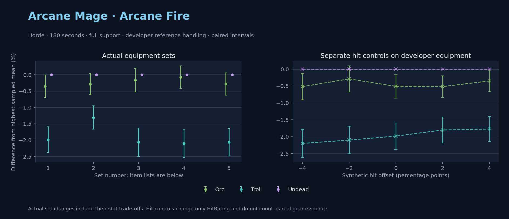

Horde · Orc / Troll / Undead

No pet or guardian appears in the reference combat metrics. Reference: Orc, developer equipment, 180 seconds and full support. Pet choices remain those of the developer build.
WoWSims developer · P1 Arcane
Unimplemented enchant or active set effects: [{"id": 181, "pieces": 2, "effects": ["+8 All Resistances."]}, {"id": 181, "pieces": 4, "effects": ["When struck in combat has a 2% chance of freezing the attacker in place for 3s. Can only occur once every 60 sec."]}]
180 seconds, full support and original developer references. Hit below is generic sheet melee / spell hit; school and talent bonuses can be attached directly to spells.
| Race | DPS | Gap and interval | Generic hit | Replay |
|---|---|---|---|---|
| Undead | 778.80 | +0.000% ± 0.000 | 2.9% / 2.9% | Native input · Website JSON |
| Orc | 776.02 | -0.356% ± 0.346 | 2.9% / 2.9% | Native input · Website JSON |
| Troll | 763.35 | -1.984% ± 0.392 | 2.9% / 2.9% | Native input · Website JSON |
| Slot | Item | ID | Enchant |
|---|---|---|---|
| Head | Magister's Crown | 16686 | |
| Neck | Gem of Trapped Innocents | 23057 | |
| Shoulder | Sorcerer's Mantle | 226936 | |
| Back | Drape of Vaulted Secrets | 21415 | |
| Chest | Magister's Robes | 16688 | |
| Wrist | Magister's Bindings | 16683 | |
| Hands | Magister's Gloves | 16684 | |
| Waist | Magister's Belt | 16685 | |
| Legs | Magister's Leggings | 16687 | |
| Feet | Magister's Boots | 16682 | |
| Ring 1 | Brilliant Watcher's Signet | 275982 | |
| Ring 2 | Ring of Entropy | 18543 | |
| Trinket 1 | Talisman of Ephemeral Power | 18820 | |
| Trinket 2 | Neltharion's Tear | 19379 | |
| Main hand | Grand Marshal's Mageblade | 23451 | |
| Off hand | Master Dragonslayer's Orb | 19366 | |
| Ranged / relic | Torch of Light | 279246 |
Community calculated list · Published pre-raid
Unimplemented enchant or active set effects: [{"id": 181, "pieces": 2, "effects": ["+8 All Resistances."]}]
180 seconds, full support and original developer references. Hit below is generic sheet melee / spell hit; school and talent bonuses can be attached directly to spells.
| Race | DPS | Gap and interval | Generic hit | Replay |
|---|---|---|---|---|
| Undead | 804.90 | +0.000% ± 0.000 | 6.6% / 6.6% | Native input · Website JSON |
| Orc | 802.60 | -0.286% ± 0.321 | 6.6% / 6.6% | Native input · Website JSON |
| Troll | 794.37 | -1.308% ± 0.360 | 6.6% / 6.6% | Native input · Website JSON |
| Slot | Item | ID | Enchant |
|---|---|---|---|
| Head | Sorcerer's Crown | 226935 | Arcanum of Focus |
| Neck | Archlight Talisman | 15856 | Enchant Necklace - Spell Power |
| Shoulder | Magister's Mantle | 16689 | |
| Back | Arcanoweave Cloak | 272411 | |
| Chest | Sorcerer's Robes | 226932 | Enchant Chest - Major Intellect |
| Wrist | Magister's Bindings | 16683 | Enchant Bracer - Greater Spellpower |
| Hands | Sorcerer's Gauntlets | 226930 | Enchant Gloves - Arcane Power |
| Waist | Belt of the Archmage | 18405 | |
| Legs | Magister's Leggings | 16687 | Arcanum of Focus |
| Feet | Sorcerer's Sandals | 226931 | Mystic Rugged Armor Kit |
| Ring 1 | Channeler's Ring | 272406 | |
| Ring 2 | Blessed Band of Light | 272407 | |
| Trinket 1 | Weakness Analyzer | 272438 | |
| Trinket 2 | Rune of the Guard Captain | 19120 | |
| Main hand | Sageblade | 22383 | |
| Off hand | Spirit of Aquementas | 11904 | Enchant Off-Hand - Superior Intellect |
| Ranged / relic | Nether Force Wand | 11263 |
Published one-slot hit alternative · Published pre-raid
One source-listed alternative; at least 80% of the source slot score retained. Reported hit selects the contrast; only native stats determine simulation outcomes. This is an experimental combination, not an endorsed best set.
Unimplemented enchant or active set effects: [{"id": 181, "pieces": 2, "effects": ["+8 All Resistances."]}]
180 seconds, full support and original developer references. Hit below is generic sheet melee / spell hit; school and talent bonuses can be attached directly to spells.
| Race | DPS | Gap and interval | Generic hit | Replay |
|---|---|---|---|---|
| Undead | 785.88 | +0.000% ± 0.000 | 5.6% / 5.6% | Native input · Website JSON |
| Orc | 784.56 | -0.168% ± 0.355 | 5.6% / 5.6% | Native input · Website JSON |
| Troll | 769.65 | -2.066% ± 0.432 | 5.6% / 5.6% | Native input · Website JSON |
| Slot | Item | ID | Enchant |
|---|---|---|---|
| Head | Sorcerer's Crown | 226935 | Arcanum of Focus |
| Neck | Archlight Talisman | 15856 | Enchant Necklace - Spell Power |
| Shoulder | Magister's Mantle | 16689 | |
| Back | Arcanoweave Cloak | 272411 | |
| Chest | Sorcerer's Robes | 226932 | Enchant Chest - Major Intellect |
| Wrist | Magister's Bindings | 16683 | Enchant Bracer - Greater Spellpower |
| Hands | Gloves of Spell Mastery | 14146 | Enchant Gloves - Arcane Power |
| Waist | Belt of the Archmage | 18405 | |
| Legs | Magister's Leggings | 16687 | Arcanum of Focus |
| Feet | Sorcerer's Sandals | 226931 | Mystic Rugged Armor Kit |
| Ring 1 | Channeler's Ring | 272406 | |
| Ring 2 | Blessed Band of Light | 272407 | |
| Trinket 1 | Weakness Analyzer | 272438 | |
| Trinket 2 | Rune of the Guard Captain | 19120 | |
| Main hand | Sageblade | 22383 | |
| Off hand | Spirit of Aquementas | 11904 | Enchant Off-Hand - Superior Intellect |
| Ranged / relic | Nether Force Wand | 11263 |
Published ranked alternatives · Published pre-raid
Recorded source replacements: [{"slot": "shoulder", "from": 227808, "to": 19050, "publishedAlternativeRank": 1, "publishedEpDelta": -11.9, "reason": "First published alternative compatible with the current WoWSims database, class, faction and occupied slots."}, {"slot": "waist", "from": 228190, "to": 18405, "publishedAlternativeRank": 1, "publishedEpDelta": -15.3, "reason": "First published alternative compatible with the current WoWSims database, class, faction and occupied slots."}]
Unimplemented enchant or active set effects: [{"id": 181, "pieces": 2, "effects": ["+8 All Resistances."]}]
180 seconds, full support and original developer references. Hit below is generic sheet melee / spell hit; school and talent bonuses can be attached directly to spells.
| Race | DPS | Gap and interval | Generic hit | Replay |
|---|---|---|---|---|
| Undead | 801.31 | +0.000% ± 0.000 | 6.8% / 6.8% | Native input · Website JSON |
| Orc | 800.70 | -0.077% ± 0.347 | 6.8% / 6.8% | Native input · Website JSON |
| Troll | 784.43 | -2.106% ± 0.425 | 6.8% / 6.8% | Native input · Website JSON |
| Slot | Item | ID | Enchant |
|---|---|---|---|
| Head | Sorcerer's Crown | 226935 | Arcanum of Focus |
| Neck | Archlight Talisman | 15856 | Enchant Necklace - Spell Power |
| Shoulder | Mantle of the Timbermaw | 19050 | |
| Back | Arcanoweave Cloak | 272411 | |
| Chest | Robe of the Archmage | 14152 | Enchant Chest - Major Intellect |
| Wrist | Magister's Bindings | 16683 | Enchant Bracer - Greater Spellpower |
| Hands | Sorcerer's Gauntlets | 226930 | Enchant Gloves - Arcane Power |
| Waist | Belt of the Archmage | 18405 | |
| Legs | Magister's Leggings | 16687 | Arcanum of Focus |
| Feet | Magister's Boots | 16682 | Mystic Rugged Armor Kit |
| Ring 1 | Channeler's Ring | 272406 | |
| Ring 2 | Blessed Band of Light | 272407 | |
| Trinket 1 | Weakness Analyzer | 272438 | |
| Trinket 2 | Frozen Heart of the Mountain | 249469 | |
| Main hand | Sageblade | 22383 | |
| Off hand | Spirit of Aquementas | 11904 | Enchant Off-Hand - Superior Intellect |
| Ranged / relic | Brilliant Wand | 249385 |
Published one-slot hit alternative · Published pre-raid
One source-listed alternative; at least 80% of the source slot score retained. Reported hit selects the contrast; only native stats determine simulation outcomes. This is an experimental combination, not an endorsed best set.
Recorded source replacements: [{"slot": "shoulder", "from": 227808, "to": 19050, "publishedAlternativeRank": 1, "publishedEpDelta": -11.9, "reason": "First published alternative compatible with the current WoWSims database, class, faction and occupied slots."}, {"slot": "waist", "from": 228190, "to": 18405, "publishedAlternativeRank": 1, "publishedEpDelta": -15.3, "reason": "First published alternative compatible with the current WoWSims database, class, faction and occupied slots."}]
Unimplemented enchant or active set effects: [{"id": 181, "pieces": 2, "effects": ["+8 All Resistances."]}]
180 seconds, full support and original developer references. Hit below is generic sheet melee / spell hit; school and talent bonuses can be attached directly to spells.
| Race | DPS | Gap and interval | Generic hit | Replay |
|---|---|---|---|---|
| Undead | 795.34 | +0.000% ± 0.000 | 5.8% / 5.8% | Native input · Website JSON |
| Orc | 793.10 | -0.282% ± 0.343 | 5.8% / 5.8% | Native input · Website JSON |
| Troll | 778.95 | -2.061% ± 0.423 | 5.8% / 5.8% | Native input · Website JSON |
| Slot | Item | ID | Enchant |
|---|---|---|---|
| Head | Sorcerer's Crown | 226935 | Arcanum of Focus |
| Neck | Archlight Talisman | 15856 | Enchant Necklace - Spell Power |
| Shoulder | Mantle of the Timbermaw | 19050 | |
| Back | Arcanoweave Cloak | 272411 | |
| Chest | Robe of the Archmage | 14152 | Enchant Chest - Major Intellect |
| Wrist | Magister's Bindings | 16683 | Enchant Bracer - Greater Spellpower |
| Hands | Gloves of Spell Mastery | 14146 | Enchant Gloves - Arcane Power |
| Waist | Belt of the Archmage | 18405 | |
| Legs | Magister's Leggings | 16687 | Arcanum of Focus |
| Feet | Magister's Boots | 16682 | Mystic Rugged Armor Kit |
| Ring 1 | Channeler's Ring | 272406 | |
| Ring 2 | Blessed Band of Light | 272407 | |
| Trinket 1 | Weakness Analyzer | 272438 | |
| Trinket 2 | Frozen Heart of the Mountain | 249469 | |
| Main hand | Sageblade | 22383 | |
| Off hand | Spirit of Aquementas | 11904 | Enchant Off-Hand - Superior Intellect |
| Ranged / relic | Brilliant Wand | 249385 |
The same declared pool is available to every race. Each race keeps its best validation-sample set with its screening-selected racial policy. Separate samples confirm that choice, with fresh precision samples near the practical-loss boundary. Gaps use the highest sampled mean under that same duration, support and reference treatment as their reference. A zero reference gap does not certify a race; the main matrix also allows uncertainty in the leader.
| Pool | Seconds | Support | References | Race | DPS | Gap and interval | Racial policies / mana | Selected set | Generic hit: melee / spell | Replay |
|---|---|---|---|---|---|---|---|---|---|---|
| published-pre-raid | 60 | full | developer | Orc | 933.23 | +0.000% ± 0.0005,000 iterations | developer / developer / developerMana waits 0.1s | published-mage-arcane-fire-horde-8942f2bb5cacc6cb | 6.8% / 6.8% | Input · Result · Stats |
| published-pre-raid | 60 | full | developer | Undead | 929.30 | -0.420% ± 0.1755,000 iterations | developer / developer / developerMana waits 0.1s | published-mage-arcane-fire-horde-8942f2bb5cacc6cb | 6.8% / 6.8% | Input · Result · Stats |
| published-pre-raid | 60 | full | developer | Troll | 913.35 | -2.130% ± 0.2175,000 iterations | developer / developer / developerMana waits 0.2s | published-mage-arcane-fire-horde-8942f2bb5cacc6cb | 6.8% / 6.8% | Input · Result · Stats |
| published-pre-raid | 60 | full | explicit | Orc | 933.23 | +0.000% ± 0.0005,000 iterations | developer / developer / developerMana waits 0.1s | published-mage-arcane-fire-horde-8942f2bb5cacc6cb | 6.8% / 6.8% | Input · Result · Stats |
| published-pre-raid | 60 | full | explicit | Undead | 929.30 | -0.420% ± 0.1755,000 iterations | developer / developer / developerMana waits 0.1s | published-mage-arcane-fire-horde-8942f2bb5cacc6cb | 6.8% / 6.8% | Input · Result · Stats |
| published-pre-raid | 60 | full | explicit | Troll | 913.35 | -2.130% ± 0.2175,000 iterations | developer / developer / developerMana waits 0.2s | published-mage-arcane-fire-horde-8942f2bb5cacc6cb | 6.8% / 6.8% | Input · Result · Stats |
| published-pre-raid | 60 | self | developer | Orc | 739.75 | +0.000% ± 0.0005,000 iterations | developer / developer / developerMana waits 0.8s | published-mage-arcane-fire-horde-8942f2bb5cacc6cb | 6.8% / 6.8% | Input · Result · Stats |
| published-pre-raid | 60 | self | developer | Undead | 734.04 | -0.771% ± 0.1815,000 iterations | developer / developer / developerMana waits 0.7s | published-mage-arcane-fire-horde-8942f2bb5cacc6cb | 6.8% / 6.8% | Input · Result · Stats |
| published-pre-raid | 60 | self | developer | Troll | 729.04 | -1.447% ± 0.2575,000 iterations | oncd / developer / developerMana waits 1.1s | published-mage-arcane-fire-horde-8942f2bb5cacc6cb-lower-hit | 5.8% / 5.8% | Input · Result · Stats |
| published-pre-raid | 60 | self | explicit | Orc | 739.75 | +0.000% ± 0.0005,000 iterations | developer / developer / developerMana waits 0.8s | published-mage-arcane-fire-horde-8942f2bb5cacc6cb | 6.8% / 6.8% | Input · Result · Stats |
| published-pre-raid | 60 | self | explicit | Undead | 734.04 | -0.771% ± 0.1815,000 iterations | developer / developer / developerMana waits 0.7s | published-mage-arcane-fire-horde-8942f2bb5cacc6cb | 6.8% / 6.8% | Input · Result · Stats |
| published-pre-raid | 60 | self | explicit | Troll | 729.04 | -1.447% ± 0.2575,000 iterations | oncd / developer / developerMana waits 1.1s | published-mage-arcane-fire-horde-8942f2bb5cacc6cb-lower-hit | 5.8% / 5.8% | Input · Result · Stats |
| published-pre-raid | 180 | full | developer | Undead | 804.13 | +0.000% ± 0.00020,000 iterations | developer / developer / developerMana waits 7.6s | published-mage-arcane-fire-horde-b8e94aece1b9cc57 | 6.6% / 6.6% | Input · Result · Stats · Website JSON |
| published-pre-raid | 180 | full | developer | Orc | 800.64 | -0.435% ± 0.07220,000 iterations | developer / developer / developerMana waits 7.9s | published-mage-arcane-fire-horde-b8e94aece1b9cc57 | 6.6% / 6.6% | Input · Result · Stats · Website JSON |
| published-pre-raid | 180 | full | developer | Troll | 790.87 | -1.649% ± 0.08120,000 iterations | developer / developer / developerMana waits 10.2s | published-mage-arcane-fire-horde-b8e94aece1b9cc57 | 6.6% / 6.6% | Input · Result · Stats · Website JSON |
| published-pre-raid | 180 | full | explicit | Undead | 804.13 | +0.000% ± 0.00020,000 iterations | developer / developer / developerMana waits 7.6s | published-mage-arcane-fire-horde-b8e94aece1b9cc57 | 6.6% / 6.6% | Input · Result · Stats |
| published-pre-raid | 180 | full | explicit | Orc | 800.64 | -0.435% ± 0.07220,000 iterations | developer / developer / developerMana waits 7.9s | published-mage-arcane-fire-horde-b8e94aece1b9cc57 | 6.6% / 6.6% | Input · Result · Stats |
| published-pre-raid | 180 | full | explicit | Troll | 790.87 | -1.649% ± 0.08120,000 iterations | developer / developer / developerMana waits 10.2s | published-mage-arcane-fire-horde-b8e94aece1b9cc57 | 6.6% / 6.6% | Input · Result · Stats |
| published-pre-raid | 180 | self | developer | Undead | 530.01 | +0.000% ± 0.00020,000 iterations | developer / developer / developerMana waits 67.5s | published-mage-arcane-fire-horde-b8e94aece1b9cc57 | 6.6% / 6.6% | Input · Result · Stats |
| published-pre-raid | 180 | self | developer | Orc | 527.63 | -0.450% ± 0.10220,000 iterations | developer / developer / developerMana waits 68.0s | published-mage-arcane-fire-horde-b8e94aece1b9cc57 | 6.6% / 6.6% | Input · Result · Stats |
| published-pre-raid | 180 | self | developer | Troll | 512.65 | -3.276% ± 0.12420,000 iterations | developer / developer / developerMana waits 72.3s | published-mage-arcane-fire-horde-b8e94aece1b9cc57 | 6.6% / 6.6% | Input · Result · Stats |
| published-pre-raid | 180 | self | explicit | Undead | 530.01 | +0.000% ± 0.00020,000 iterations | developer / developer / developerMana waits 67.5s | published-mage-arcane-fire-horde-b8e94aece1b9cc57 | 6.6% / 6.6% | Input · Result · Stats |
| published-pre-raid | 180 | self | explicit | Orc | 527.63 | -0.450% ± 0.10220,000 iterations | developer / developer / developerMana waits 68.0s | published-mage-arcane-fire-horde-b8e94aece1b9cc57 | 6.6% / 6.6% | Input · Result · Stats |
| published-pre-raid | 180 | self | explicit | Troll | 512.65 | -3.276% ± 0.12420,000 iterations | developer / developer / developerMana waits 72.3s | published-mage-arcane-fire-horde-b8e94aece1b9cc57 | 6.6% / 6.6% | Input · Result · Stats |
| published-pre-raid | 300 | full | developer | Undead | 729.05 | +0.000% ± 0.0005,000 iterations | developer / developer / developerMana waits 62.8s | published-mage-arcane-fire-horde-b8e94aece1b9cc57 | 6.6% / 6.6% | Input · Result · Stats |
| published-pre-raid | 300 | full | developer | Orc | 724.93 | -0.566% ± 0.1485,000 iterations | developer / developer / developerMana waits 63.2s | published-mage-arcane-fire-horde-b8e94aece1b9cc57 | 6.6% / 6.6% | Input · Result · Stats |
| published-pre-raid | 300 | full | developer | Troll | 714.45 | -2.002% ± 0.1615,000 iterations | developer / developer / developerMana waits 68.1s | published-mage-arcane-fire-horde-b8e94aece1b9cc57 | 6.6% / 6.6% | Input · Result · Stats |
| published-pre-raid | 300 | full | explicit | Undead | 729.05 | +0.000% ± 0.0005,000 iterations | developer / developer / developerMana waits 62.8s | published-mage-arcane-fire-horde-b8e94aece1b9cc57 | 6.6% / 6.6% | Input · Result · Stats |
| published-pre-raid | 300 | full | explicit | Orc | 724.93 | -0.566% ± 0.1485,000 iterations | developer / developer / developerMana waits 63.2s | published-mage-arcane-fire-horde-b8e94aece1b9cc57 | 6.6% / 6.6% | Input · Result · Stats |
| published-pre-raid | 300 | full | explicit | Troll | 714.45 | -2.002% ± 0.1615,000 iterations | developer / developer / developerMana waits 68.1s | published-mage-arcane-fire-horde-b8e94aece1b9cc57 | 6.6% / 6.6% | Input · Result · Stats |
| published-pre-raid | 300 | self | developer | Undead | 437.39 | +0.000% ± 0.0005,000 iterations | developer / developer / developerMana waits 166.2s | published-mage-arcane-fire-horde-b8e94aece1b9cc57 | 6.6% / 6.6% | Input · Result · Stats |
| published-pre-raid | 300 | self | developer | Orc | 435.01 | -0.545% ± 0.1735,000 iterations | developer / developer / developerMana waits 166.4s | published-mage-arcane-fire-horde-b8e94aece1b9cc57 | 6.6% / 6.6% | Input · Result · Stats |
| published-pre-raid | 300 | self | developer | Troll | 423.46 | -3.185% ± 0.2005,000 iterations | developer / developer / developerMana waits 171.3s | published-mage-arcane-fire-horde-b8e94aece1b9cc57 | 6.6% / 6.6% | Input · Result · Stats |
| published-pre-raid | 300 | self | explicit | Undead | 437.39 | +0.000% ± 0.0005,000 iterations | developer / developer / developerMana waits 166.2s | published-mage-arcane-fire-horde-b8e94aece1b9cc57 | 6.6% / 6.6% | Input · Result · Stats |
| published-pre-raid | 300 | self | explicit | Orc | 435.01 | -0.545% ± 0.1735,000 iterations | developer / developer / developerMana waits 166.4s | published-mage-arcane-fire-horde-b8e94aece1b9cc57 | 6.6% / 6.6% | Input · Result · Stats |
| published-pre-raid | 300 | self | explicit | Troll | 423.46 | -3.185% ± 0.2005,000 iterations | developer / developer / developerMana waits 171.3s | published-mage-arcane-fire-horde-b8e94aece1b9cc57 | 6.6% / 6.6% | Input · Result · Stats |
| developer-reference | 60 | full | developer | Orc | 901.50 | +0.000% ± 0.0005,000 iterations | developer / developer / developerMana waits 0.1s | developer | 2.9% / 2.9% | Input · Result · Stats |
| developer-reference | 60 | full | developer | Undead | 897.00 | -0.499% ± 0.2115,000 iterations | developer / developer / developerMana waits 0.1s | developer | 2.9% / 2.9% | Input · Result · Stats |
| developer-reference | 60 | full | developer | Troll | 883.64 | -1.981% ± 0.2685,000 iterations | oncd / developer / developerMana waits 0.1s | developer | 2.9% / 2.9% | Input · Result · Stats |
| developer-reference | 60 | full | explicit | Orc | 901.50 | +0.000% ± 0.0005,000 iterations | developer / developer / developerMana waits 0.1s | developer | 2.9% / 2.9% | Input · Result · Stats |
| developer-reference | 60 | full | explicit | Undead | 897.00 | -0.499% ± 0.2115,000 iterations | developer / developer / developerMana waits 0.1s | developer | 2.9% / 2.9% | Input · Result · Stats |
| developer-reference | 60 | full | explicit | Troll | 883.64 | -1.981% ± 0.2685,000 iterations | oncd / developer / developerMana waits 0.1s | developer | 2.9% / 2.9% | Input · Result · Stats |
| developer-reference | 60 | self | developer | Orc | 720.86 | +0.000% ± 0.0005,000 iterations | developer / developer / developerMana waits 0.6s | developer | 2.9% / 2.9% | Input · Result · Stats |
| developer-reference | 60 | self | developer | Undead | 715.28 | -0.774% ± 0.2265,000 iterations | developer / developer / developerMana waits 0.5s | developer | 2.9% / 2.9% | Input · Result · Stats |
| developer-reference | 60 | self | developer | Troll | 709.84 | -1.529% ± 0.2705,000 iterations | oncd / developer / developerMana waits 0.7s | developer | 2.9% / 2.9% | Input · Result · Stats |
| developer-reference | 60 | self | explicit | Orc | 720.86 | +0.000% ± 0.0005,000 iterations | developer / developer / developerMana waits 0.6s | developer | 2.9% / 2.9% | Input · Result · Stats |
| developer-reference | 60 | self | explicit | Undead | 715.28 | -0.774% ± 0.2265,000 iterations | developer / developer / developerMana waits 0.5s | developer | 2.9% / 2.9% | Input · Result · Stats |
| developer-reference | 60 | self | explicit | Troll | 709.84 | -1.529% ± 0.2705,000 iterations | oncd / developer / developerMana waits 0.7s | developer | 2.9% / 2.9% | Input · Result · Stats |
| developer-reference | 180 | full | developer | Undead | 777.14 | +0.000% ± 0.00020,000 iterations | developer / developer / developerMana waits 6.8s | developer | 2.9% / 2.9% | Input · Result · Stats · Website JSON |
| developer-reference | 180 | full | developer | Orc | 775.33 | -0.233% ± 0.07920,000 iterations | developer / developer / developerMana waits 7.1s | developer | 2.9% / 2.9% | Input · Result · Stats · Website JSON |
| developer-reference | 180 | full | developer | Troll | 763.84 | -1.711% ± 0.08920,000 iterations | oncd / developer / developerMana waits 10.1s | developer | 2.9% / 2.9% | Input · Result · Stats · Website JSON |
| developer-reference | 180 | full | explicit | Undead | 777.14 | +0.000% ± 0.00020,000 iterations | developer / developer / developerMana waits 6.8s | developer | 2.9% / 2.9% | Input · Result · Stats |
| developer-reference | 180 | full | explicit | Orc | 775.33 | -0.233% ± 0.07920,000 iterations | developer / developer / developerMana waits 7.1s | developer | 2.9% / 2.9% | Input · Result · Stats |
| developer-reference | 180 | full | explicit | Troll | 763.84 | -1.711% ± 0.08920,000 iterations | oncd / developer / developerMana waits 10.1s | developer | 2.9% / 2.9% | Input · Result · Stats |
| developer-reference | 180 | self | developer | Undead | 520.24 | +0.000% ± 0.00020,000 iterations | developer / developer / developerMana waits 64.9s | developer | 2.9% / 2.9% | Input · Result · Stats |
| developer-reference | 180 | self | developer | Orc | 518.72 | -0.292% ± 0.11320,000 iterations | developer / developer / developerMana waits 65.5s | developer | 2.9% / 2.9% | Input · Result · Stats |
| developer-reference | 180 | self | developer | Troll | 500.14 | -3.864% ± 0.14020,000 iterations | oncd / developer / developerMana waits 70.8s | developer | 2.9% / 2.9% | Input · Result · Stats |
| developer-reference | 180 | self | explicit | Undead | 520.24 | +0.000% ± 0.00020,000 iterations | developer / developer / developerMana waits 64.9s | developer | 2.9% / 2.9% | Input · Result · Stats |
| developer-reference | 180 | self | explicit | Orc | 518.72 | -0.292% ± 0.11320,000 iterations | developer / developer / developerMana waits 65.5s | developer | 2.9% / 2.9% | Input · Result · Stats |
| developer-reference | 180 | self | explicit | Troll | 500.14 | -3.864% ± 0.14020,000 iterations | oncd / developer / developerMana waits 70.8s | developer | 2.9% / 2.9% | Input · Result · Stats |
| developer-reference | 300 | full | developer | Undead | 711.82 | +0.000% ± 0.0005,000 iterations | developer / developer / developerMana waits 60.0s | developer | 2.9% / 2.9% | Input · Result · Stats |
| developer-reference | 300 | full | developer | Orc | 706.65 | -0.726% ± 0.1615,000 iterations | developer / developer / developerMana waits 60.9s | developer | 2.9% / 2.9% | Input · Result · Stats |
| developer-reference | 300 | full | developer | Troll | 696.89 | -2.097% ± 0.1655,000 iterations | developer / developer / developerMana waits 65.8s | developer | 2.9% / 2.9% | Input · Result · Stats |
| developer-reference | 300 | full | explicit | Undead | 711.82 | +0.000% ± 0.0005,000 iterations | developer / developer / developerMana waits 60.0s | developer | 2.9% / 2.9% | Input · Result · Stats |
| developer-reference | 300 | full | explicit | Orc | 706.65 | -0.726% ± 0.1615,000 iterations | developer / developer / developerMana waits 60.9s | developer | 2.9% / 2.9% | Input · Result · Stats |
| developer-reference | 300 | full | explicit | Troll | 696.89 | -2.097% ± 0.1655,000 iterations | developer / developer / developerMana waits 65.8s | developer | 2.9% / 2.9% | Input · Result · Stats |
| developer-reference | 300 | self | developer | Undead | 432.34 | +0.000% ± 0.0005,000 iterations | developer / developer / developerMana waits 161.5s | developer | 2.9% / 2.9% | Input · Result · Stats |
| developer-reference | 300 | self | developer | Orc | 429.47 | -0.665% ± 0.1855,000 iterations | developer / developer / developerMana waits 162.7s | developer | 2.9% / 2.9% | Input · Result · Stats |
| developer-reference | 300 | self | developer | Troll | 418.72 | -3.150% ± 0.2075,000 iterations | developer / developer / developerMana waits 168.0s | developer | 2.9% / 2.9% | Input · Result · Stats |
| developer-reference | 300 | self | explicit | Undead | 432.34 | +0.000% ± 0.0005,000 iterations | developer / developer / developerMana waits 161.5s | developer | 2.9% / 2.9% | Input · Result · Stats |
| developer-reference | 300 | self | explicit | Orc | 429.47 | -0.665% ± 0.1855,000 iterations | developer / developer / developerMana waits 162.7s | developer | 2.9% / 2.9% | Input · Result · Stats |
| developer-reference | 300 | self | explicit | Troll | 418.72 | -3.150% ± 0.2075,000 iterations | developer / developer / developerMana waits 168.0s | developer | 2.9% / 2.9% | Input · Result · Stats |
180 seconds, full support and the developer equipment anchor. These checks test creature sensitivity without a full gear search.
| Target | References | Race | DPS | Gap and interval | Replay |
|---|---|---|---|---|---|
| beast | developer | Troll | 801.51 | +0.000% ± 0.000 | Input · Result |
| beast | developer | Undead | 778.80 | -2.834% ± 0.389 | Input · Result |
| beast | developer | Orc | 774.83 | -3.330% ± 0.372 | Input · Result |
| beast | explicit | Troll | 801.51 | +0.000% ± 0.000 | Input · Result |
| beast | explicit | Undead | 778.80 | -2.834% ± 0.389 | Input · Result |
| beast | explicit | Orc | 774.83 | -3.330% ± 0.372 | Input · Result |
| elemental | developer | Undead | 778.80 | +0.000% ± 0.000 | Input · Result |
| elemental | developer | Orc | 774.83 | -0.510% ± 0.347 | Input · Result |
| elemental | developer | Troll | 763.35 | -1.984% ± 0.392 | Input · Result |
| elemental | explicit | Undead | 778.80 | +0.000% ± 0.000 | Input · Result |
| elemental | explicit | Orc | 774.83 | -0.510% ± 0.347 | Input · Result |
| elemental | explicit | Troll | 763.35 | -1.984% ± 0.392 | Input · Result |
Some equipment has unimplemented enchant or set effects
These known-issue notes are source context. Runtime checks establish current cast coverage, including Mutilate. They do not prove every mechanic matches the game.